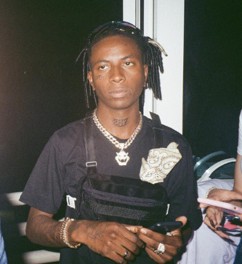
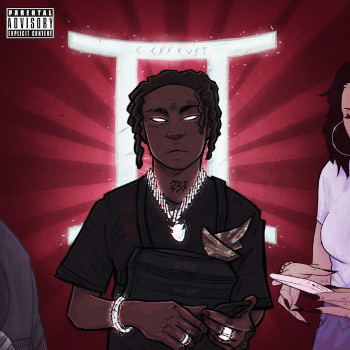
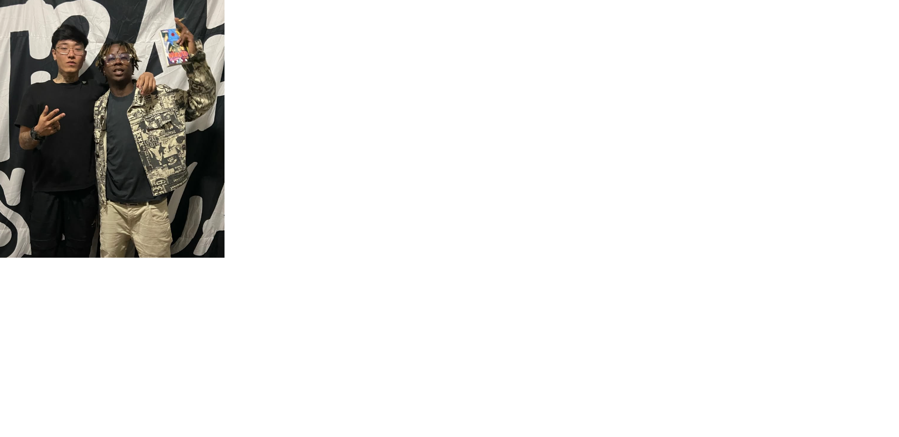
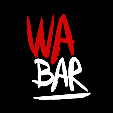

Como podemos ver, este aqui é o Yunk vino
é um rapper paulista nascido em Carapicuíba em 1997, considerado um dos principais expoentes da nova geração do trap brasileiro, iniciou sua carreira em 2018-2019.
por misturar trap com sonoridades influenciadas pelo estilo americano, acumulando centenas de milhões de streams
Teve o seu primeiro sucesso carregando o Album 237 como seu maior sucesso.

Carregando o TRAP nacional nas costas
Yunk vino veio se destacando, lançando album atras de album.
Assim como o seu 237 DELUXE

Não posso esquecer de botar uma foto com ele, né? 🤪

